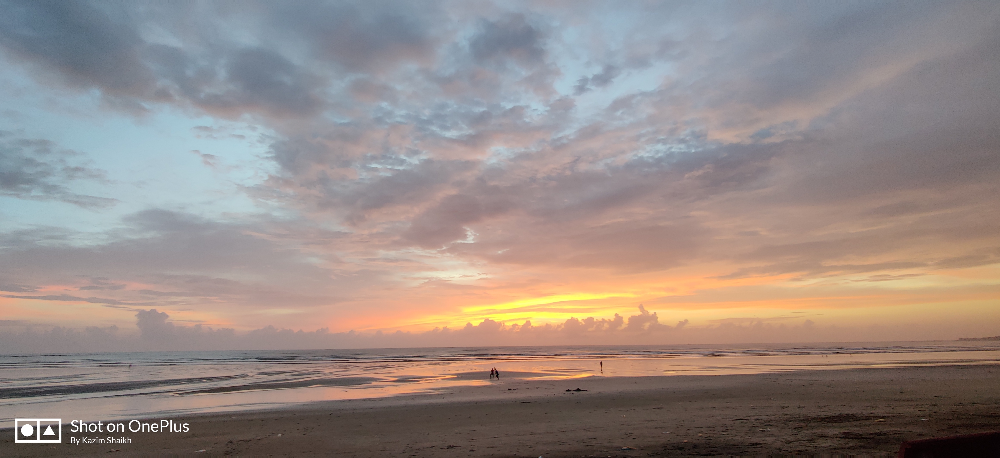
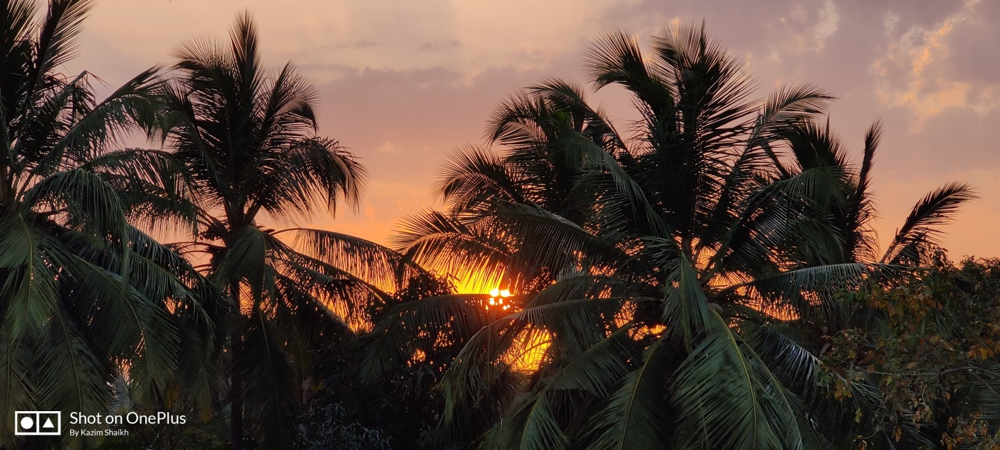
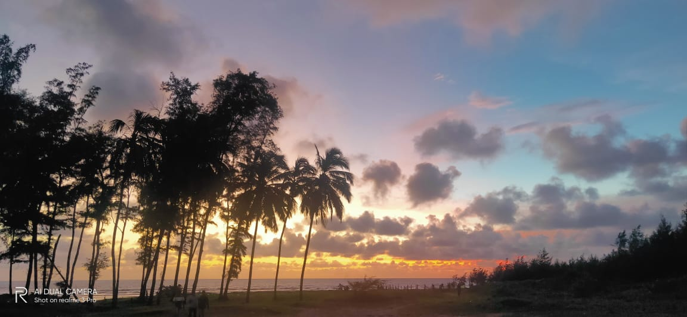
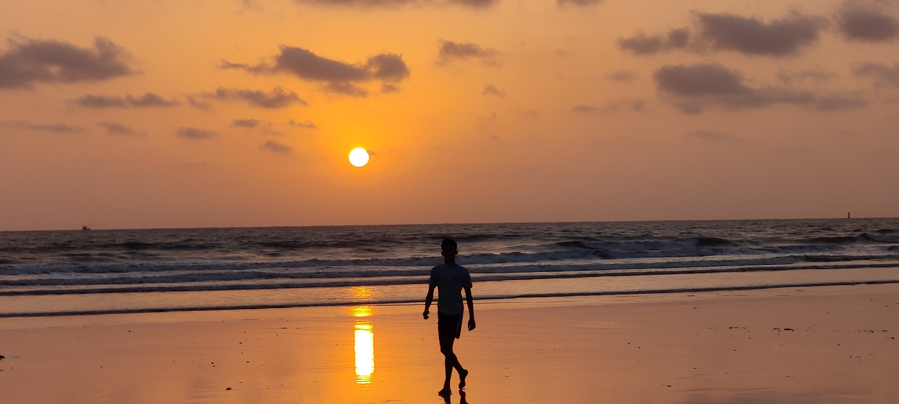

Shirgaon Beach
- Historical Name of Shirgaon during Portuguese ruling was Sirgão. In 1720, one of the ports of Bassein, Kalyan, was conquered by the Marathas and in 1737, they took possession of Thane including all the forts in Salsette island and the forts of Parsica, Trangipara, Saibana (Present - Saivan, south bank of the Tansa river), Ilha das Vaccas - (Island of Arnala), Manora (Manor), Sabajo (Sambayo/Shabaz (near Belapur) - present day Belapur fort photo) the hills of Santa Cruz and Santa Maria.
- Under the Rule of Chimaji Appa these ports were recaptured later on, of which one is what is presently known as Shirgaon Beach.
- Located at 6 Kms from the main station of Palghar, it Spans a good 4 Km belt, The place offers clean and green experience of freshness and true delight!
- However not being as famous as other nearby beaches has helped the place remain clean and green, and one can find peace in a true sense. Horse Rides, ATV rides, exquisite Konkan Cuisines and Special sea food delicacies are available!
- Although, the place was only recently announced as a major tourist attraction spot, the Whereabouts do speak for themselves!


